Abstract
This notebook is part of the NeuroInsight project, software designed to revolutionize the way medical professionals analyze brain MRI scans for abnormalities such as cancer. Our research demonstrates how we trained a convolutional neural network using the Attention-UNet architecture to perform highly accurate brain tumor segmentation.
Our model automates the process of:
- Detecting and segmenting various sub-regions of a brain tumor in MRI scans (e.g., edema, enhancing, non-enhancing areas).
- Predicting whether this brain tumor belongs to an aggressive category (High-Grade Glioma) or a less aggressive category (Low-Grade Glioma).
- Providing detailed pixel-level segmentation maps that can be used for clinical purposes, enabling precise tumor monitoring and treatment planning.
1. About the Dataset
The dataset utilized for this research is BraTS 2019. This dataset is a well-known benchmark used for developing and evaluating algorithms for brain tumor analysis from multi-modal MRI scans. It is part of the Medical Segmentation Decathlon and the Multimodal Brain Tumor Image Segmentation Challenge (BraTS).
Dataset Overview
- Total Samples: 335 patient cases
- Tumor Type: Gliomas (High-Grade Glioma (HGG) and Low-Grade Glioma (LGG))
- Imaging Modalities (per patient): T1-weighted (T1), T1 with contrast enhancement (T1Gd/T1ce), T2-weighted (T2), and Fluid Attenuated Inversion Recovery (T2-FLAIR)
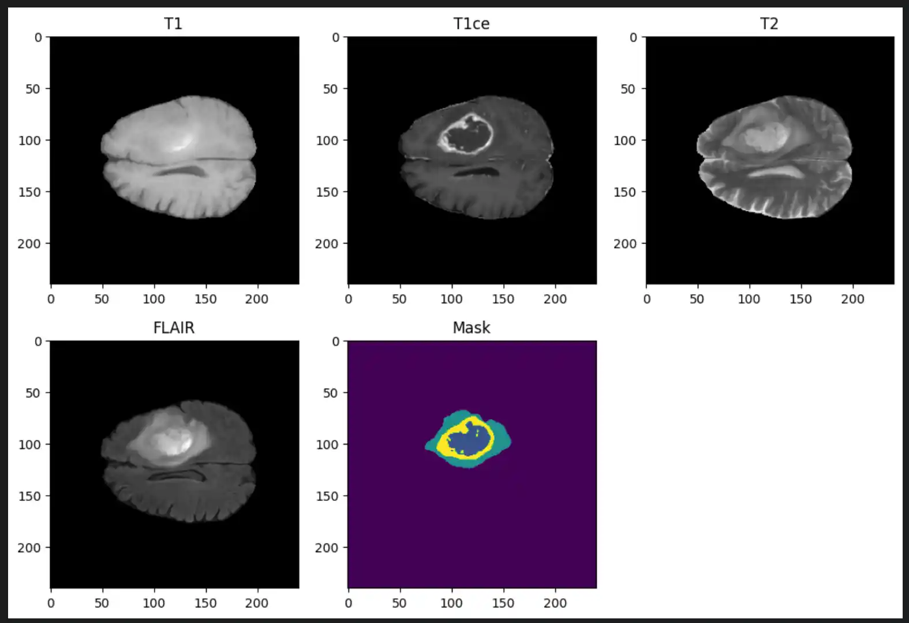
Ground Truth Annotations
Each label map contains voxel-wise annotations for specific tumor sub-regions:
- Label 1: Necrotic and non-enhancing tumor core (NCR/NET)
- Label 2: Peritumoral edema (ED)
- Label 4: Enhancing tumor (ET)
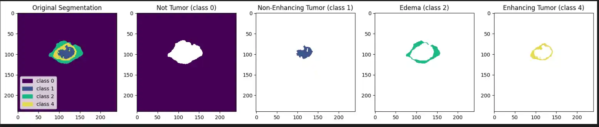
2. Data Splitting
To train and evaluate our model effectively, we split our dataset into three distinct parts. We implemented Stratified Splitting so that the distribution of High-Grade Glioma (HGG) and Low-Grade Glioma (LGG) samples is preserved in each set, completely avoiding class imbalance issues.
- Initial Split: 70% of the data allocated for training, 30% set aside for testing and validation.
- Second Split: From the reserved 30%, 15% is allocated for testing (model evaluation) and 15% for validation (hyperparameter tuning).
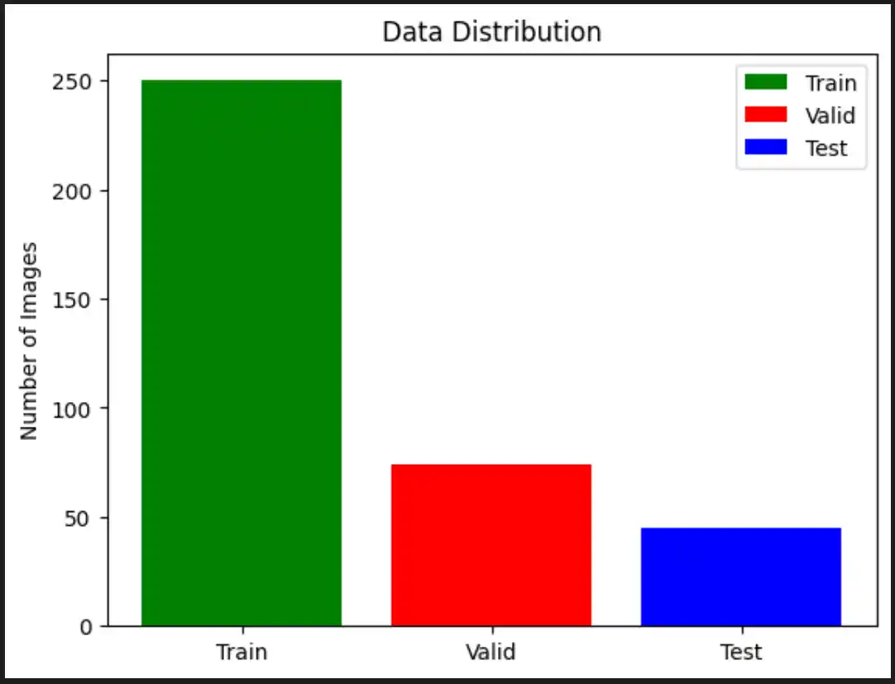
3. Data Scaling & Preprocessing
Z-score normalization (or standardization) is a vital preprocessing technique that transforms data to have a mean of 0 and a standard deviation of 1. This is particularly important for medical imaging tasks where pixel values can range widely (e.g., maximum values in FLAIR images exceeding 1273.0), which could otherwise slow down the training process.
Z-Score Normalization Formula
Z-score normalization helps scale these raw pixel values into a directly comparable range, drastically improving the stability and computational efficiency of the neural network's training phase.
4. Data Generator
To manage the significant memory footprint of volumetric MRI data, we developed a custom Python Data Generator. The following preprocessing steps occur dynamically within this generator:
- Loading and Normalizing: The
__load_and_normalizefunction loads the T1CE and FLAIR MRI modalities usingnibabel. Images are Z-score normalized (subtracting the mean, dividing by standard deviation) ensuring a zero-centered distribution. - Processing Masks: The
__load_segmentationfunction loads the segmentation mask and replaces class 4 with class 3 (a common approach in multi-class segmentation tasks to simplify continuous categorical logic). - Slice Selection: The generator selects slices within a specified active range (default 50 to 130) to eliminate empty background slices, reducing memory usage and focusing purely on informative data.
- Resizing and Stacking: T1CE and FLAIR slices are resized to a consistent shape of 128x128 pixels. The modalities are then stacked together along the channel dimension to form a multi-channel input for the model.
- One-Hot Encoding: The 128x128 segmentation mask is processed via one-hot encoding, expanding it into a categorical mask with 4 distinct channels/classes, making it strictly suitable for the segmentation loss function.
- Shuffling: At the end of each epoch, an
on_epoch_endcallback shuffles patient data to ensure random, unbiased sampling during iterative training.
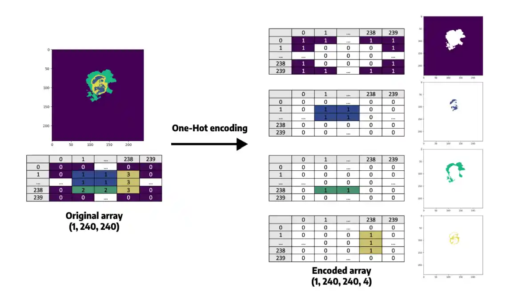
5. Model Architecture Specifications
| Component | Details |
|---|---|
| Input Dimensions | 128 × 128 × 2 (FLAIR and T1CE MRI slices) |
| Encoder Path | 3 blocks of Conv2D (ReLU) + MaxPooling with expanding filters: 32 → 64 → 128 |
| Bottleneck Layer | 2 Conv2D layers with 256 filters each |
| Attention Gates | Applied dynamically before each decoder skip connection (128, 64, 32 filters) |
| Decoder Path | 3 UpSampling blocks with Conv2D layers and concatenated attention-filtered features |
| Output Layer | 1 × 1 Conv2D + Softmax activation (for 4-class categorical segmentation) |
| Loss Function | Categorical Crossentropy |
| Optimization | Adam Optimizer (learning rate = 0.001) |
| Training Efficiency | Mixed Precision Training (float16) with a Batch Size of 2 |
6. Evaluation Metrics
We evaluated our trained model using the following rigorous medical imaging metrics:
- Dice Coefficient: Measures the overlap between predicted and true segmentation boundaries. Ranges from 0 (no overlap) to 1 (perfect overlap).
- Precision: Measures the accuracy of positive predictions. Higher precision indicates fewer false positives in healthy tissue.
- Sensitivity (Recall): Measures how well the model identifies all true positives. High sensitivity ensures the model misses fewer active tumor regions.
- Specificity: Measures the model’s ability to correctly identify true negatives.
- IoU (Intersection over Union): Measures the area of overlap between the predicted and true regions. A higher IoU correlates strongly with excellent overall segmentation performance.
7. Neuro Insight: Clinical Application
To bridge the gap between academic research and accessible clinical utility, the Attention-UNet segmentation model detailed above was integrated into a full-stack medical application named Neuro Insight.
This platform empowers non-technical medical professionals to seamlessly upload 3D MRI scans, perform real-time automated segmentation, accurately classify tumor grades (HGG/LGG), and automatically generate detailed, shareable clinical reports.
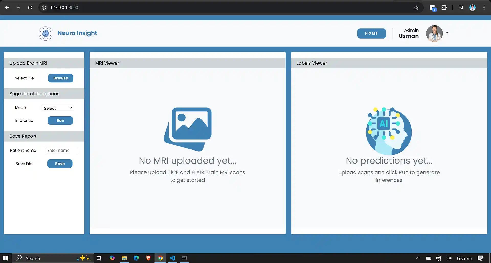
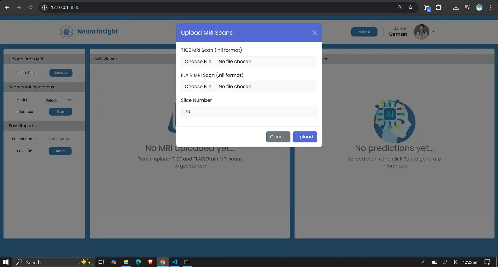
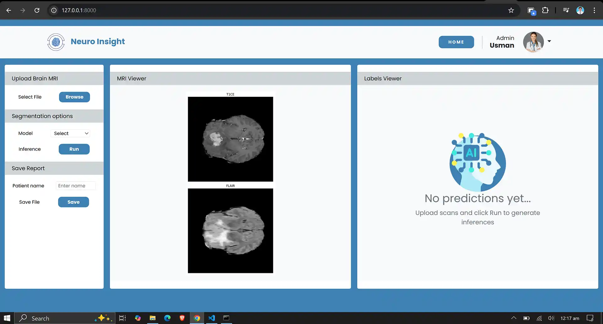
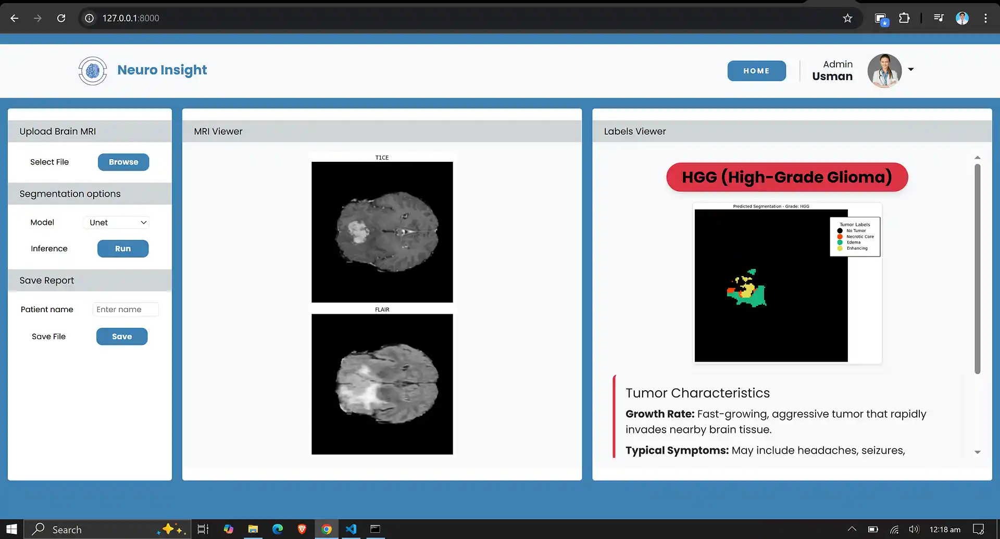
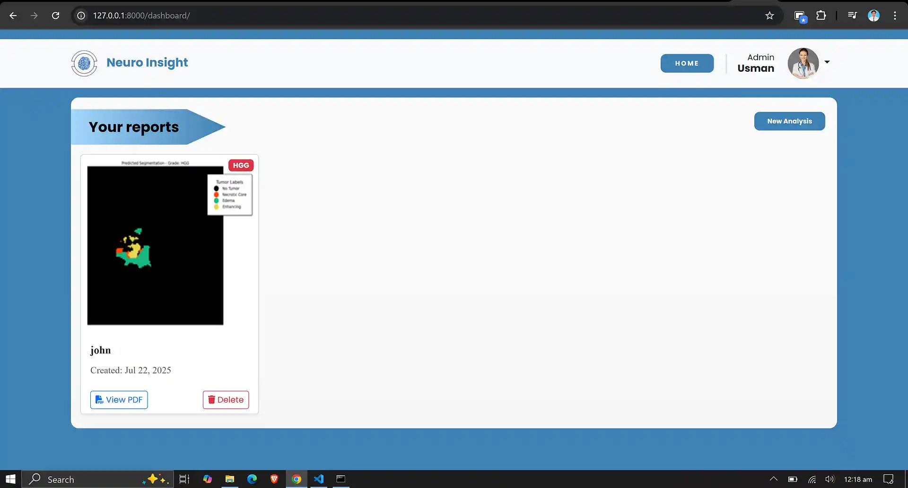
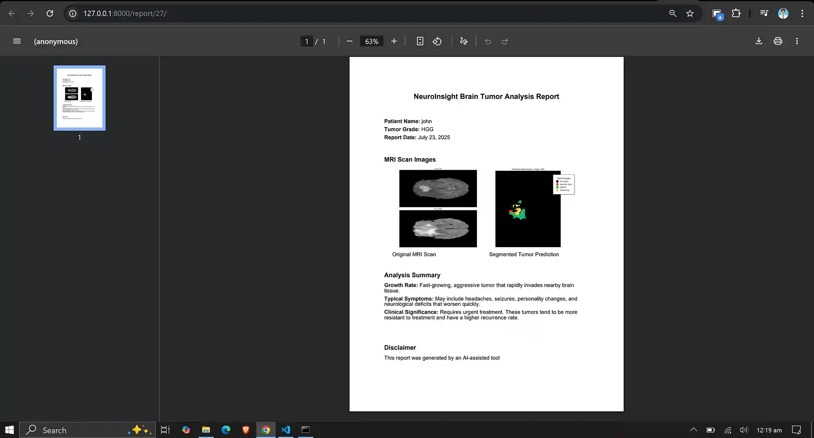
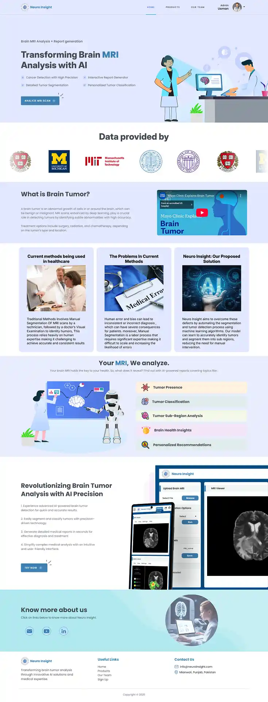
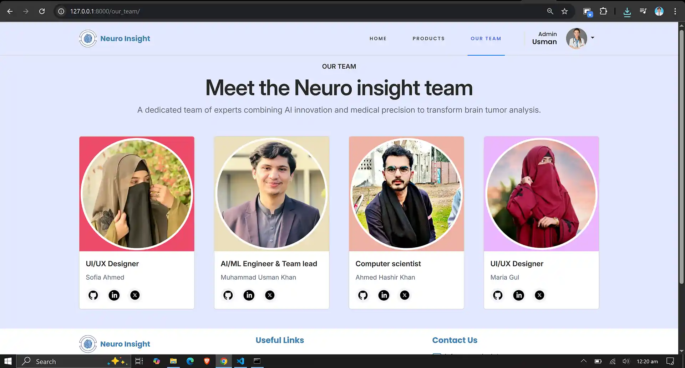